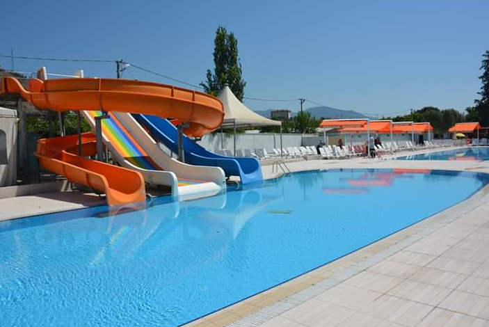
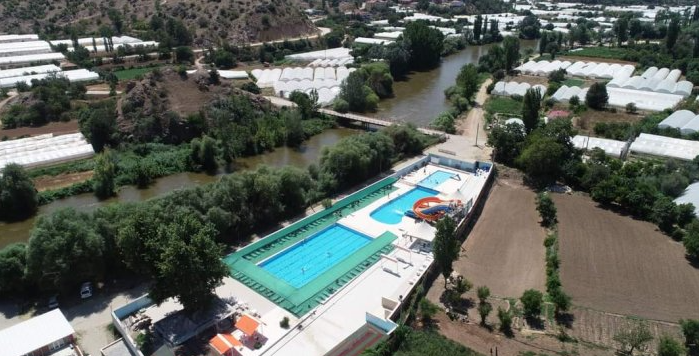

MİHALGAZİ
Mihalgazi, eski ismi Gümele, Eskişehir ilinin bir ilçesidir.
Osmanlı târihinde önceleri Sultanönü (Eskişehir) sancağına bağlı köyken,
sırasıyla önce Göynük kazasıyla birlikte önce Bursa, sonra Bolu sancaklarına bağlanmıştır.
1868 yılında Gümele, Kastamonu vilayetinin Bolu Sancağının Göynük kazasına bağlı köydü.
1894 yılında Bilecik'in Söğüt İlçesinin İnhisar bucağına bağlandı. Ancak, köylük durumu 32 yıl sürmüştur.
Köy halkı, Türk Kurtuluş Savaşı sırasında İnhisar'dan gelen Yunan ordusunu püskürtmüştür.
Aynı yıl Mihalgazi İnhisar'dan ayrılarak Söğüt'e bağlı bir bucak olmuştur.
Bu durumunu 1946'ya kadar koruyan Mihalgazi, 1946 yılında Eskişehir'in Merkez ilçesine, 1957'de Sarıcakaya ilçesine bağlanmıştır.
1967'de belde olan Mihalgazi, 1990 yılında ilçe olmuştur.
9 mahallesi mevcuttur. Mihalgazi Belediyesi, Merkez ilçesi dışındaki diğer
ilçe ve belde belediyeleri gibi Eskişehir Büyükşehir Belediyesine bağlanmıştır.
Mihalgazi İlköğretim Okulu vardır.
Okula taşımalı olarak şu köylerden öğrenciler gelir: Demirciler, Karaoğlan, Bozaniç, Sakarılıca (1992-2009 arası beldeydi).
Ayrıca kaplıcaları vardır.
Sündiken Dağları ve Bolu Dağının arasında kalır.
Yeşillik çok vardır, Eskişehir ilinin sezonluk sebze ve ihtiyacını karşılar.
Sakarya nehri ilçeye ayrı bir zenginlik katar. İlçe coğrafi olarak Karadeniz Bölgesi'ndedir.
Halka açık belediye havuzları da vardır.


Mihalıççık İlçesi Hakkında Bilgi Almak için Tıklayınız